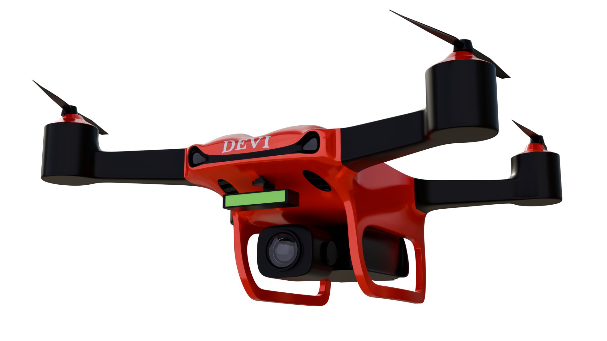
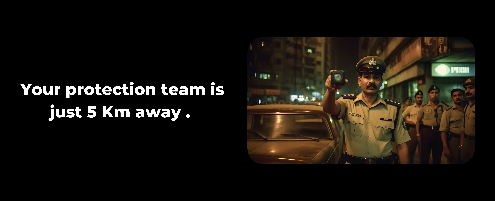
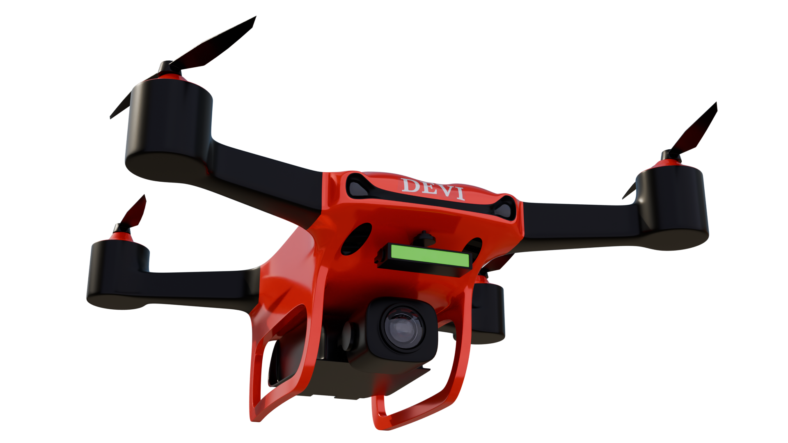
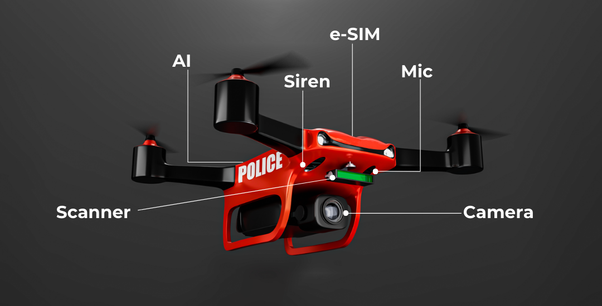
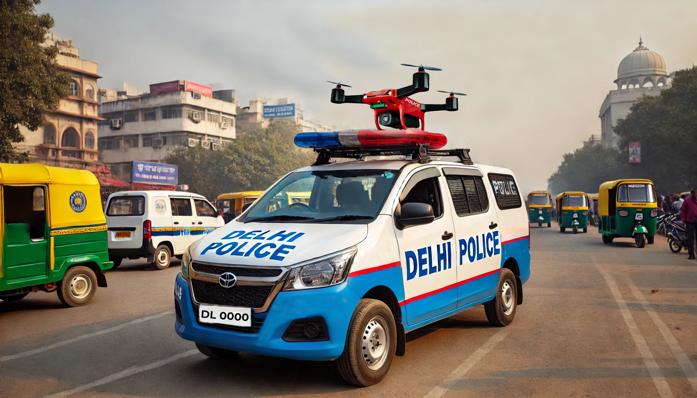
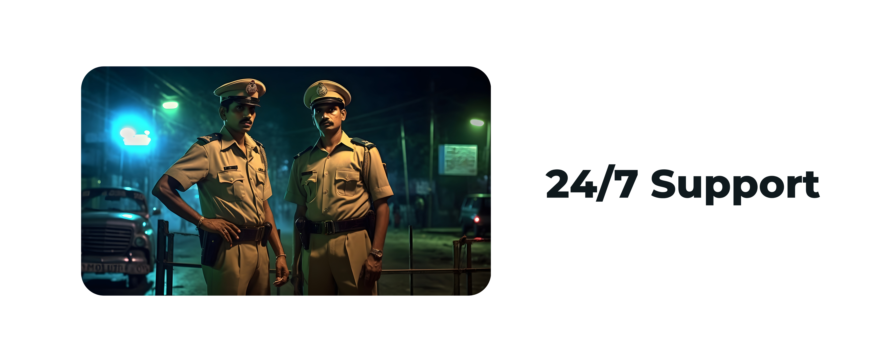

About Devi Drone
Devi Drone is a cutting-edge unmanned aerial vehicle (UAV) designed to cater to various industries, including defense, surveillance, disaster management, agriculture, and logistics. Built with precision engineering and advanced technology, it provides a reliable and efficient solution for aerial monitoring and autonomous operations. Equipped with high-resolution cameras, thermal imaging sensors, and AI-powered navigation, Devi Drone can operate in diverse environments, from urban landscapes to remote areas. Its robust design ensures durability, making it suitable for challenging weather conditions.
One of the standout features of Devi Drone is its adaptability. It can be modified for multiple applications, such as search-and-rescue missions, crop health monitoring, border surveillance, and emergency medical deliveries. With an emphasis on efficiency and safety, the drone is designed to support industries that require quick and accurate aerial insights. Whether used for security purposes, environmental monitoring, or commercial deliveries, Devi Drone offers a dependable, high-tech solution.


How Devi Drone Works?
Devi Drone functions through a combination of GPS-based autonomous flight, real-time data processing, and AI-driven obstacle detection. It is equipped with advanced sensors that allow it to map out its surroundings and navigate seamlessly without manual intervention. The drone can be operated in different modes, including fully autonomous flight, semi-autonomous control, and manual operation via a remote control system or a mobile application.
To ensure precision and safety, Devi Drone uses a sophisticated flight control system that continuously analyzes environmental data, adjusting its path in real time to avoid obstacles. Its high-definition cameras and thermal sensors transmit live footage to operators, providing crucial information for decision-making in applications such as security monitoring or disaster relief.
The drone is powered by rechargeable lithium-ion batteries or a hybrid fuel system, depending on the model, enabling extended flight durations for long-distance operations. Its modular design allows for quick attachment of specialized equipment, such as spraying mechanisms for agricultural use or payload compartments for medical deliveries. Devi Drone can be programmed to follow specific flight paths, return to base automatically when low on battery, and communicate with other drones in a network for coordinated missions.


Medical Emergency



Meet Our Founder
Mr. Raushan Kumar
Raushan Kumar, an entrepreneur and innovation-driven mentor, is the visionary behind Devi Drone, a cutting-edge unmanned aerial vehicle (UAV) designed for multiple applications, including surveillance, disaster management, agriculture, and logistics. With a strong background in revolutionary technology, he has developed Devi Drone to enhance efficiency in critical operations, integrating AI-powered navigation, real-time data transmission, and autonomous flight capabilities.
The drone's modular design allows customization for various industries, making it a versatile solution for aerial monitoring and emergency response. Raushan Kumar’s commitment to technological advancements continues to drive innovation in the UAV sector.
All Right Reserved Vayu Galaxy